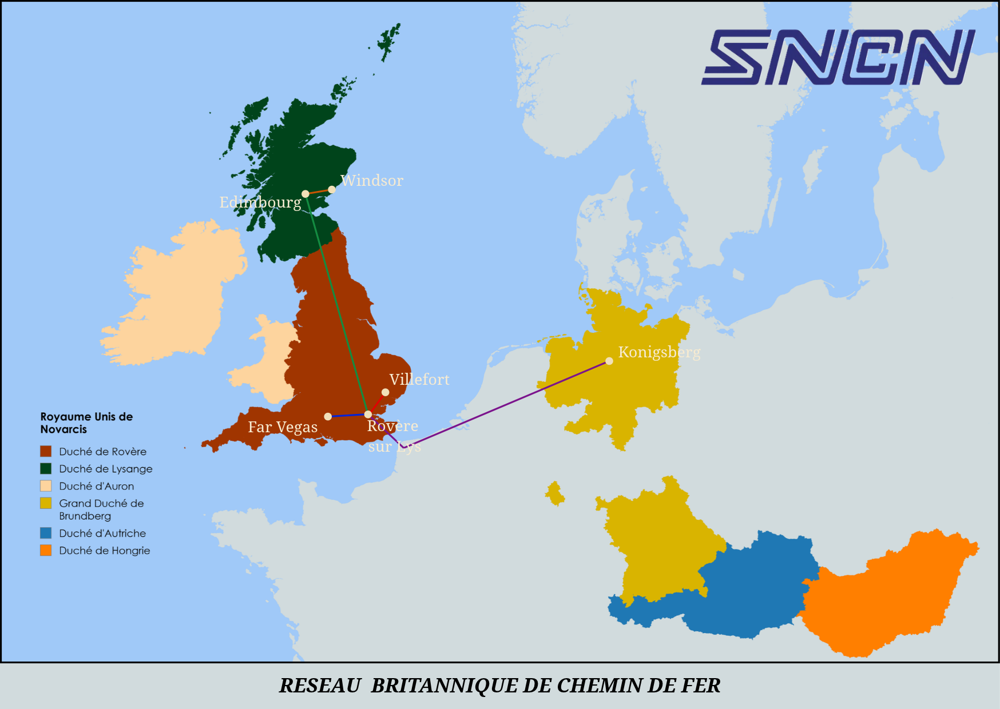

Planifier un trajet
Sélectionnez votre gare de départ et votre destination pour afficher la feuille de route.
Aperçu du réseau ferroviaire
Lignes Métropolitaines (Cliquez sur une ligne pour voir le détail)
Lignes Transmanche & Continentales
Carte Officielle du Réseau Britannique de Chemin de Fer
